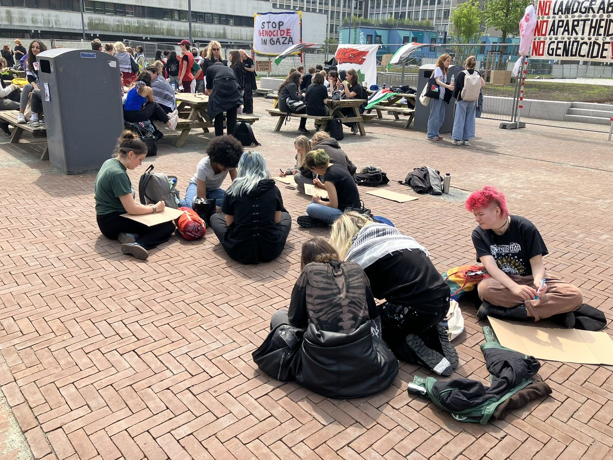
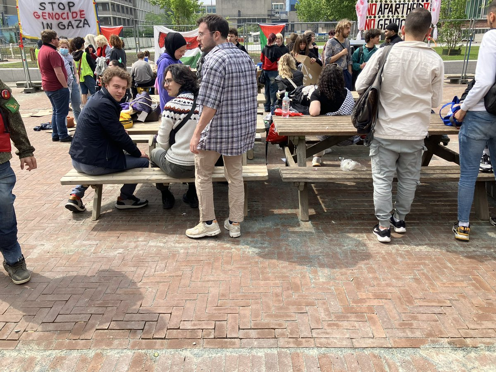

北雁冬翼（simone luxem）🏳️⚧️🏳️🌈🔬
@Simone_Luxem
补充：更多现场照片和视频
其实要是说完全没有流血事件也是不对的，还是有一个扛着很大的摄像机的人在拍摄的时候没看到脚下台阶摔到了，流了一脸血的（（
不过…大概是可以放心把自己亲生妹妹送进来的学校吧…目前来看…


北雁冬翼（simone luxem）🏳️⚧️🏳️🌈🔬
@Simone_Luxem
以及也再一次说明了UvA的管理层是多么的离大谱，自己没事找事把事态升级成这种样子，并且还做了一个非常恶劣的典型，不如改名叫Vrije-less University van Amsterdam得了…
也希望vu可以保持下去一直这样子吧，以及向其它学校示范了应该如何去做…